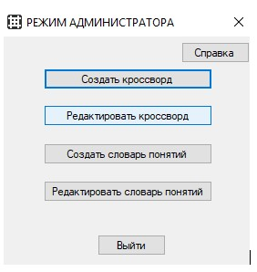
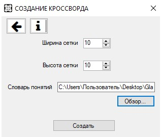

После авторизации пользователь переходит в меню администратора, ему доступны следующе функции:
«Создать кроссворд», «Редактировать кроссворд», «Создать словарь понятий», «Редактировать словарь понятий»
При нажатии на кнопку «Создать кроссворд» осуществляется переход к форме «Создание кроссворда»,
где можно задать параметры кроссворда и выбрать словарь понятий.
После нажатия кнопки «Создать кроссворд» появляется форма «Создание/редактирование кроссворда»,
в которой есть инструменты для создания кроссворда.

